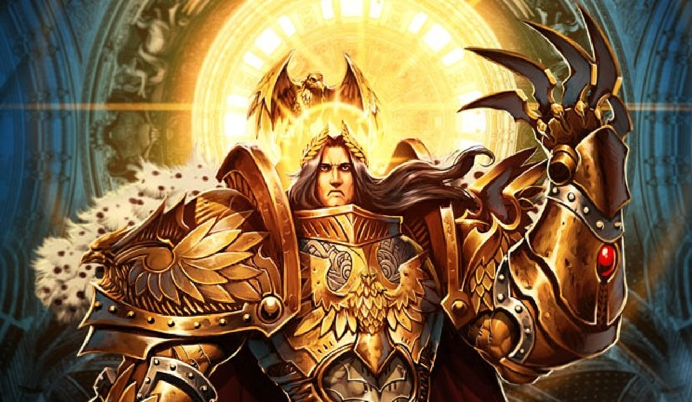

The Emperor of Mankind is the immortal Perpetual who serves as the ruling monarch of the Imperium of Man, and is described by the Imperial Ecclesiarchy and the Imperial Cult as the Father, Guardian and God of humanity. The Chaos Gods and the daemons of the Warp refer to Him as "the Anathema" for He is the greatest embodiment of universal Order in the galaxy today. He has sat immobile, his body slowly crumbling, within the Golden Throne of Terra for over 10,000 standard years. Although once a living man, His shattered, decaying body can no longer support life, and it is kept intact only by the cybernetic mechanisms of the Golden Throne and a potent mind itself sustained by the daily sacrifice of thousands of lives.
The Emperor chose to sacrifice His immortal life at the end of the Horus Heresy in the service and protection of Mankind. To humanity's countless trillions across the galaxy-spanning Imperium, He is nothing less than God. Through his Imperium, Mankind is united and remains one of the most powerful intelligent races in the Milky Way Galaxy as well as its most dominant in terms of both population and territory held. United under one government, Mankind is able to survive the myriad deadly threats it faces from aliens, the Forces of Chaos and the Traitors, Heretics and mutants that lie within the Imperium's boundaries.
The Imperium's rule, carried on in the Emperor's name since the end of the Horus Heresy by the High Lords of Terra and a multitude of Imperial organisations, has been long, oppressive and necessarily harsh. It has also resulted in technological and cultural stagnation, and a regression into tyranny, superstition and religious obfuscation and intolerance that would have horrified the Emperor. Though He is no longer responsive to external stimuli, the Emperor still lies at the very heart of the Imperium's continued existence. Although He cannot be directly involved in the day-to-day running of humanity's galactic government. His existence on the Golden Throne is vital to sustaining the Imperium, since His powerful mind's presence in the Immaterium maintains and directs the Astronomican, the psychic beacon that makes possible faster-than-light Warp travel and is vital to Imperial shipping, transportation, commerce and communication.
He is said to still guide His race through the psychically-reactive divination tool known as the Emperor's Tarot, which select psykers can consult to gain a glimpse of the future and the Emperor's will. He is also said to constantly battle the Chaos Gods in the Warp and prevent their further intrusion upon the material universe. His mind must remain vigilant at all times throughout the entire Imperium to safeguard the human race and to offer His protection to the faithful. Above all else, it is Mankind's collective belief in the Emperor's divinity that serves as its greatest protection from Chaos and the other hideous dangers that plague the galaxy.
As the Imperial Creed has taught for over 10,000 standard years, the Emperor protects...The Emperor is the collective reincarnation of all the shamans of Neolithic Humanity's various peoples, the first Human psykers. The foul Warp entities that would become the four Great Powers of Chaos had not yet fully formed when the Emperor was born on Earth during prehistoric times, somewhere in ancient central Anatolia (modern Turkey) in the 8th Millennium B.C. But even before the birth of the Emperor, as Humanity grew and progressed, the Warp began to become increasingly disturbed by the dark undercurrents of Humanity's collective psyche, and the shamans began to lose their former ability to reincarnate into new bodies. Instead, upon dying, their souls were consumed by the entities and daemons of the Warp.
Eventually the shamans of Humanity, unable to reincarnate, would become extinct, and without the shamans and their psychic abilities to guide the race, Humanity would inevitably fall prey to the corruptions of Chaos, just as eventually happened to the Aeldari. In these ancient days, all the shamans of Earth gathered in a grand conclave to decide what must be done to stave off the day when they had all been consumed by the Warp. In the end, the shamans decided to pool their collective psychic energies by reincarnating as a single soul in a single Human body to create an individual they called "the New Man." The thousands of shamans, as one, took poison, and as one, they died, their souls flowing into the Immaterium in a rush of psychic power that overwhelmed those daemons who sought to feast upon it with a cleansing, purifying fire, a flame imperishable that became one soul out of many.
The man who would later become known as the Emperor of Mankind first appears in Imperial records as just one of the many warlords struggling for control of Terra during the later part of the Age of Strife in the 30th Millennium. The Emperor undertook a series of military campaigns against all the other warlords on the planet that would collectively later become known as the Unification Wars. During these conflicts the Emperor employed several military formations -- such as the genetically-altered warriors of the unit designated Geno 5-2 Chiliad who would go on to serve in the Imperial Army -- that consisted of using genetically-enhanced warriors to maximise His tactical prowess. The most powerful of these troops were the proto-Astartes known as the Thunder Warriors. These warriors played a significant role in the Emperor's eventual victory over all the other warlords of Terra and led Him to believe that His future plans to reunite Mankind would require the creation of an even more potent core of genetically-engineered military commanders and warriors. Following the Battle of Mount Ararat in the Kingdom of Urartu, which was the last battle of the Unification Wars, the Unity of Terra was at last achieved after decades of blood, loss and fire. With this victory, the planet and population of Terra were at last unified under the single rule of the Emperor. But to make His dream of reuniting all of Mankind within a single galaxy-spanning empire possible, the Emperor knew that He would have to make some difficult, even immoral decisions.
The Emperor next set in motion His plan to defend and better Mankind across the galaxy, by unifying those lost bastions of humanity scattered across the myriad stars under the aegis of the newborn Imperium. This extraordinary undertaking would become known as the Great Crusade. The Emperor prepared extensively for the Great Crusade in the years after Unity was achieved on Terra; He created the special astro-telepath (Astropath) corps to link his eventual interstellar dominion together through the use of telepathy, and engineered the creation of the Astronomican, a supremely powerful psychic navigational beacon powered by the Emperor's own will and psychic abilities that would allow simplified and safer interstellar travel through the Warp across far greater distances than before. Chief amongst His designs, however, was the creation of new legions of superhuman, genetically- engineered warriors, the logical extension of the gene-troopers already under his command, though they would be far superior to the gene-enhanced troops of the Imperial Army He had used during the Unification Wars. The Emperor first undertook the Primarch Project, the creation of 20 superhuman infants whose genomes had been designed using His own genetic code as the foundation, who were intended to mature into powerful generals and statesmen for His armies. The Primarchs would be beings of such great mental and physical superiority that nothing merely human could stand against them.
To enhance the Primarchs beyond the capabilities that even genetic-engineering allowed, however, the Emperor also drew upon the powers of the Warp he had learned at Molech to enhance His creations, imbuing them with nearly godlike levels of charisma and capability, but also unintentionally making them susceptible to corruption by the entities of the Warp. However, this plan went awry with the intervention of the Ruinous Powers, who feared that the Emperor's plans might succeed too well, vastly increasing the hold of Order over the universe and diminishing their own strength. It is for this reason that all of daemonkind refers to the Emperor as "the Anathema." While accounts vary as to exactly what happened, the end of the tale is always the same; the Primarchs were cast into the Warp in their gestation chambers from beneath the Himalazian (Himalaya) Mountains in the Emperor's gene-labs despite the multiple psychic wards the Emperor had laid down upon the laboratory, and thought lost. In the aftermath of these events, the Emperor conceived a new plan. Using genetic samples that had been derived from the Primarchs' genomes, He created a caste of warriors who would possess some of the same superhuman qualities of the Primarchs and Himself. These successors to the genetically-enhanced human warriors of the Unification Wars-era were the Legiones Astartes, the Space Marine Legions of the First Founding.
After their creation, the Emperor led the 20 Space Marine Legions, all of their Astartes originally recruited from Terran-born males, in their first missions to give them experience in war and diplomacy through the reconquest of the rest of the Solar System. The Space Marines drove alien slavers from the moons of Saturn and Jupiter and most importantly, achieved peace and the eventual integration of Imperial Terra with the Cult Mechanicum of Mars. This crucial military and political alliance, formalised in the 30th Millennium with the signing of the Treaty of Mars, provided the Emperor with much of the technological means and materiel required to extend His crusade into the stars. At the same time, the alliance formalised the creation of the Imperium of Man and established the Imperial bureaucracy on Terra, transforming the Cult Mechanicum into the Adeptus Mechanicus, one of the myriad organisations that comprised the newborn Adeptus Terra, the massive government of the Imperium, the future Priesthood of Earth.
With the final abatement of the Warp Storms caused by the birth-pangs of the Chaos God Slaanesh and ended by the Fall of the Eldar, the Emperor finally began the Great Crusade at the end of the 30th Millennium. The Emperor's forces, concentrated amongst a rapidly growing cadre of Expeditionary Fleets, rediscovered long-lost human colony worlds, cast out alien oppressors, and claimed vast new territories for the newborn Imperium to exploit across the galaxy. Perhaps most importantly, the Emperor, leading His Crusade, rediscovered His lost sons, the Primarchs, as the Expeditionary Fleets pushed out deeper into the depths of unexplored space. Scattered across the galaxy, the Primarchs were found one-by-one, over a period of many decades, and reunited with their father and their own genetic sons in the Space Marine Legions. All were placed in command of the Astartes Legions created from their respective gene-seed and played a major part in forging their father's Imperium. Together they brought thousands of worlds into Imperial Compliance, establishing the rule of the Imperium over these worlds and inculcating in them the values of the Imperial Truth -- a rationalist, atheistic faith in science and technological progress that rejected all the vestiges of human irrationality and superstition, including all forms of religious faith
Well over a standard century into the Great Crusade, the Emperor decided to return to Terra to oversee a special project that He intended to cap His ambitions for humanity. This was the secret Webway Project, in which the Emperor planned to use a special artefact from the Dark Age of Technology -- the Golden Throne -- that had been discovered on Terra beneath a huge and inhospitable desert on the continent of Asia. The Emperor planned to use the Golden Throne to enter and reshape the Labyrinthine Dimension of the Eldar Webway to serve as a direct and instantaneous transport network between all the worlds of the Imperium. This human Webway would recreate the vast network of Warp Portals that had once bound together the Old Ones' and the Eldar's ancient interstellar empires and would allow Mankind to advance at a more rapid rate, scientifically and economically, than at any other time in its history. The Webway was a far more efficient means of travel, and most importantly bypassed the depredations of Chaos within the Warp that represented a constant hazard of death or corruption to human faster-than-light space travel. The ultimate objective of the Webway Project was for the Emperor to completely sever humanity from the need for the Warp in its entirety, further depriving Chaos of its power to corrupt and destroy. This would come as the Emperor guided the species in its evolution into a fully psychic race, assuring its ascendancy on the galactic stage beyond what even the lost Eldar Empire had once managed to achieve. A human-dominated Webway would also truly unite the Imperium, preventing Mankind from ever again being divided by time and great distance. But this project would require all of His considerable attention and had to be pursued in secret, lest the Eldar or other opponents of the project learn of it and seek to stop it before the Emperor's efforts could come to fruition.
The Golden Throne had been built during the Dark Age of Technology to allow human access to the Eldar Webway and took the form of a heavily mechanised throne created from an unknown type of psychically-reactive gold-complected alloy that was suspended over a pair of massive doors composed of the same golden alloy. These doors acted as the portal to the Webway and were supposedly large enough for a Warhound-class Scout Titan to walk through upright. The Golden Throne was originally located in the depths of the Imperial Palace where the Emperor's original gene-laboratory complex had once stood, an area known as the Imperial Dungeon. Hundreds of red-robed Adeptus Mechanicus Tech-priests and Servitors toiled in the Imperial Dungeon, as the Emperor sat upon the Golden Throne and used His immense powers to hold the portal into the Webway open for His workers, who constructed a new section of the Labyrinthine Dimension intended to connect Terra to the rest of the largely abandoned Eldar transdimensional transport network. Because the Webway had been constructed from a psychically- resistant material intended to protect it from penetration by the entities of the Warp, and Mankind did not possess the technology required to replicate it, the Emperor had to personally shield the new human-built sections of the Webway from Warp incursions. This required him to remain on the Golden Throne continuously and was the reason why He had been forced to leave the Great Crusade in the hands of His Primarchs and return to Terra to oversee the project personally.
This turn of events did not please all of the Emperor's subjects, several of His Primarch sons in particular. In the final stages of the Great Crusade, the Emperor's most trusted son Horus succumbed to the temptations of Chaos. This seduction had been set in place over long decades by the Primarch Lorgar and his Word Bearers Legion. Althought the Horus Heresy lasted mere seven years it is heavily documented and highly detailed.
As a result, as the Horus Heresy reached its climax with the Traitors' assault on Terra itself seven standard years after the
start of the Warmaster's drive on the Throneworld, the Emperor was forced to remain on the Golden Throne at all times save for the
few moments when Malcador the Sigillite, the Regent of Terra and the second strongest human psyker, could take His place.
Emp vs Horus Battle Terra
The Emperor and Horus unleash their potent psychic abilities against each other aboard the Warmaster's flagship, Vengeful Spirit.
When the Emperor learned of Horus' action in lowering his flagship the Vengeful Spirit's Void Shields during the final hours of the
Siege of Terra, He realised that His treacherous son was actually offering an invitation to battle. The Emperor believed He had to tak
e the war to Horus to put an end to the terrible conflict once and for all.
He had Malcador the Sigillite take his place upon the Golden Throne to protect Terra from a daemonic assault and
prepared a strike team of Astartes to face the Warmaster on his own ground. The last act of the bloody treachery
of the Horus Heresy was played out above Terra, as the Emperor led a desperate assault of Imperial Fists and Blood
Angels Space Marines against Horus' Chaos-corrupted flagship, using teleporter technology to make their way aboard.
The two champions engaged one another in a tragic battle of father and son, as Horus mortally wounded the Emperor, tearing off one of His arms and shattering His internal organs, largely because the Emperor still loved Horus and could not bring Himself to use the full extent of His psychic abilities to destroy His son. With iron resolve, the Emperor gathered the full strength of His mind at last and delivered a massive psychic attack through the chink in Warmaster's Terminator Armour that killed Horus almost instantly and obliterated his very soul from the Warp so that the Chaos Gods could not resurrect their champion. In his final moments before the Emperor unleashed His final attack to blot Horus' soul from existence, the corrupting powers of Chaos briefly relinquished their hold on the Warmaster's soul and the Emperor sensed the return of His son's sanity in the seconds before his consciousness was utterly obliterated.
It was in this battered and bleeding state that the Emperor was found by Rogal Dorn, the Primarch of the Imperial Fists Legion who had accompanied the assault force onto the Vengeful Spirit. Dorn returned with the Emperor to the Imperial Palace, where Malcador the Sigillite simply crumbled to ash upon relinquishing his place upon the Golden Throne. The Sigillite's body and mind had been burned out by the strain of holding the Golden Throne's portal closed for the time that the Emperor had been aboard the Warmaster's flagship. The dying Emperor quickly dictated plans to Dorn for the modification of the Golden Throne into an arcane life support machine that would sustain His remaining cells in an undying state between life and true death for over ten thousand Terran years, and He was subsequently interred in this altered version of the Golden Throne. The throne's mechanisms would also allow the Emperor to maintain the beacon of the Astronomican and battle the influence of the Chaos Gods in the Warp so long as His mind was empowered and sustained with the psychic energies of 1,000 psykers every day, preventing a daemonic incursion on Terra and helping to sustain Mankind against Chaos' corruptive influence throughout the galaxy. His strength rapidly failing, the Emperor had only enough time to give His final, brief instructions to Rogal Dorn before the Golden Throne's modified mechanisms were activated and He was placed within an unending stasis for more than 10,000 standard years. Only His mind remained active within the Warp as His dying body continued to decay at a glacially slow pace.
As mentioned, the Emperor's shattered and mortally-wounded body was discovered on the bridge of the Vengeful Spirit by the Primarch of the Imperial Fists, Rogal Dorn, who, following the Emperor's instructions, oversaw His internment within the Golden Throne, the arcane device modified at the Emperor's own direction to sustain His mind and decaying body. The Imperial Cult, after its establishment as the state religion of the Imperium in the 32nd Millennium, would later claim that this internment within the Golden Throne had been necessary so that the Emperor could leave the physical plane behind and "ascend" once more to His proper place in the Immaterium as the one, true God of Mankind after sacrificing Himself to save humanity from the Traitor Horus. The Emperor has remained in the Golden Throne since His "ascension" to this day, neither fully living nor wholly dead. Although the device was initially intended to be used as the nexus of the Emperor's secret project to utilise the Aeldari Webway for the good of humanity, the Golden Throne also now functions as a complex